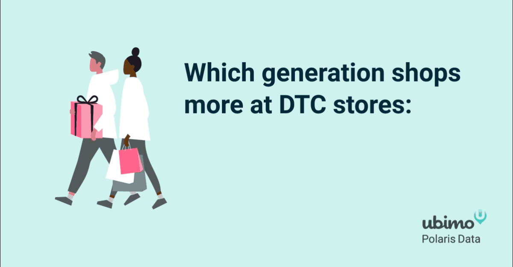
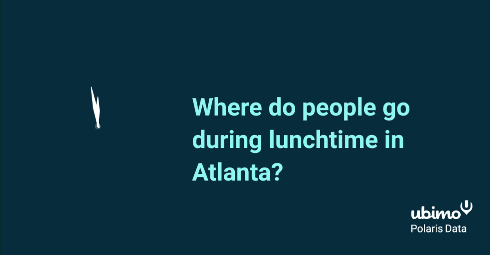
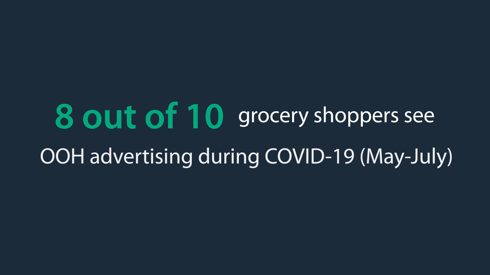
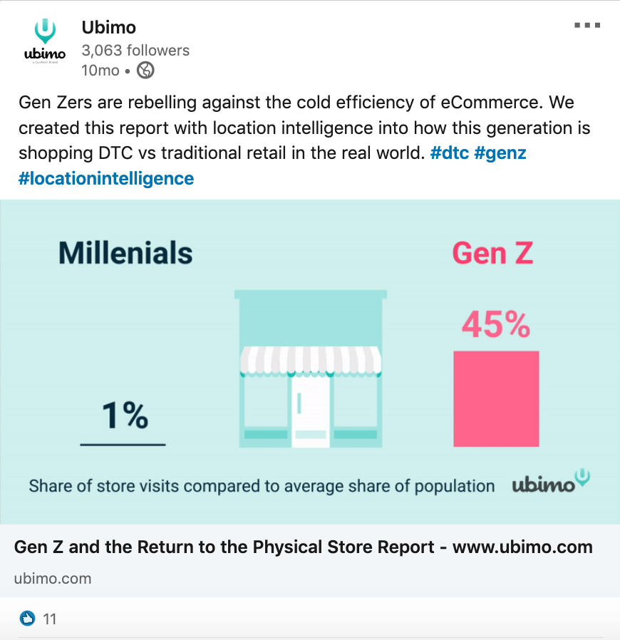
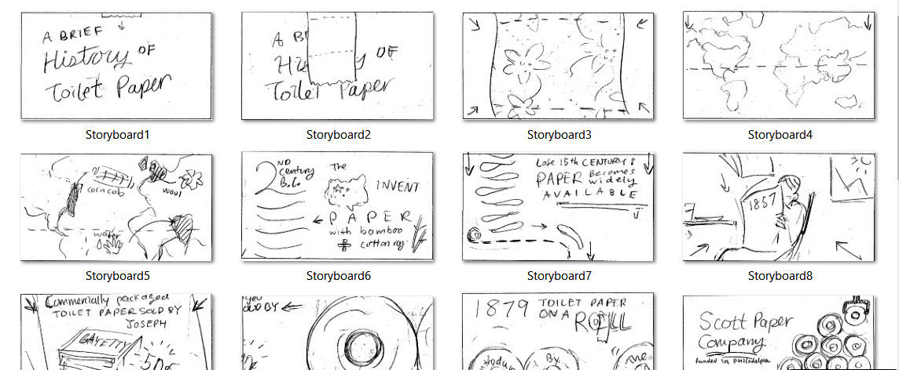
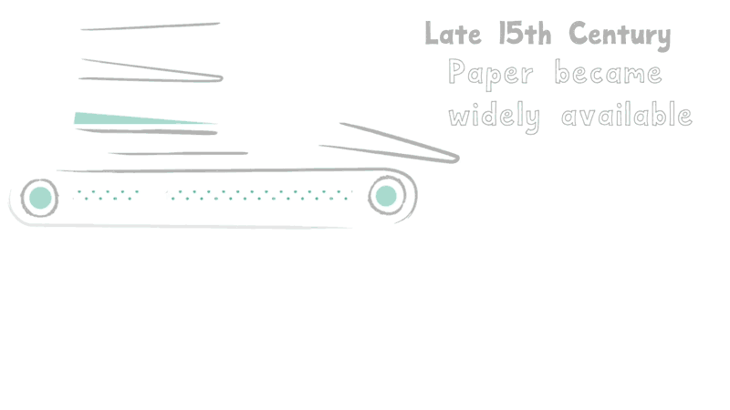

Motion
Flagship Product Demo
I produced Ubimo's first video that gives customers a tour of the product's best features. To see it, we have people fill out a form with their info to capture leads in the marketing funnel.

As Ubimo's product evolves with our new parent company, I made a second video with updated graphics, featuring a nifty frozen pizza campaign.
Social Post Thumbnails




A Brief of History of Toilet Paper
A quick 'n cheeky animation that traces how this everyday commodity we take for granted came to be.

